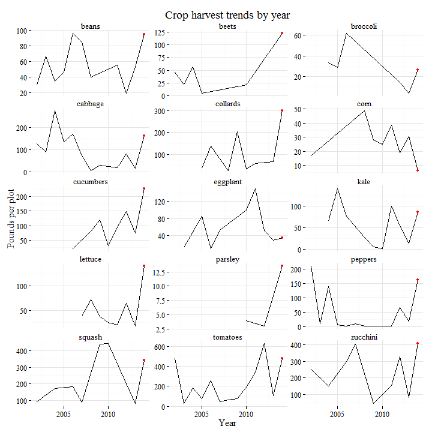
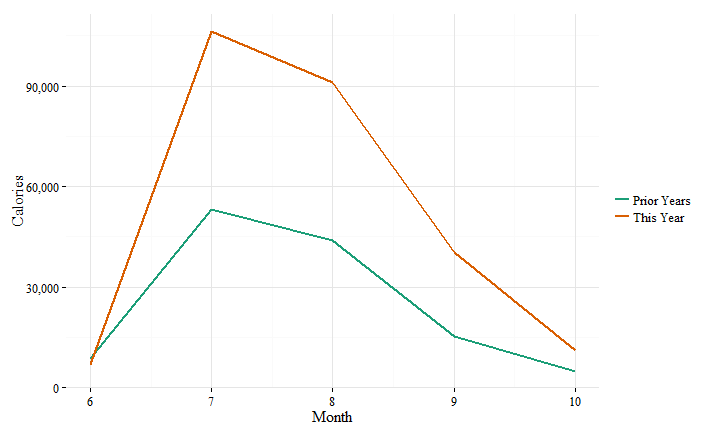
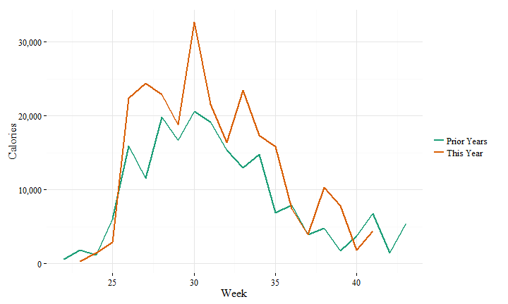

Results for 2014
We had great results in 2014!
While 2013 had the lowest yields ever, this year had the highest yields ever (at least, as far as the historical record goes).
We distributed 2,367 pounds of vegetables or about 225,000 calories - roughly three months of food for an adult. This is almost three times last year's total and 40 percent higher than the previous best year.
Here is the same result in pounds harvested.
Individual results for the year are listed in the table below.
Some gardeners harvested more than one crop for the pe'ah contribution, so each crop is shown in that case. We also tracked a few plots in the same column, so I've lumped those together, i.e. plots 6 ('Masha and Dan') and 11 ('Len and Avery') are listed as 'Masha and Dan and Len and Avery.'
| Name | Crop | Pounds | Calories |
|---|---|---|---|
| Avi and Michelle | broccoli | 18 | 2701 |
| Avi and Michelle | collards | 10 | 1362 |
| Avi and Michelle | cucumbers | 190 | 12922 |
| Avi and Michelle | lettuce | 34 | 2349 |
| Avi and Michelle | parsley | 4 | 654 |
| Avi and Michelle | tomatoes | 0 | 34 |
| Avi and Michelle | zucchini | 8 | 545 |
| Community | beans | 20 | 2780 |
| Community | beets | 2 | 488 |
| Community | cabbage | 7 | 794 |
| Community | peppers | 10 | 863 |
| Community | tomatoes | 70 | 4767 |
| Community | zucchini | 40 | 2906 |
| Dalton and Larry | collards | 22 | 2996 |
| Holly / Deb / Toni / Community | beets | 120 | 23426 |
| Holly / Deb / Toni / Community | corn | 3 | 1446 |
| Holly / Deb / Toni / Community | parsley | 2 | 327 |
| Holly / Deb / Toni / Community | peppers | 20 | 1816 |
| Holly / Deb / Toni / Community | squash | 13 | 944 |
| Holly / Deb / Toni / Community | tomatoes | 2 | 102 |
| Holly and Deb | peppers | 56 | 5085 |
| Holly and Deb | tomatoes | 1 | 68 |
| Holly and Deb and Rabbi and Janice | peppers | 55 | 4971 |
| Jennifer | lettuce | 85 | 5788 |
| Jennifer | peppers | 5 | 454 |
| Jennifer | tomatoes | 20 | 1362 |
| Julie and David | cucumbers | 1 | 85 |
| Julie and David | kale | 81 | 18444 |
| Julie and David | lettuce | 8 | 545 |
| Julie and David | zucchini | 68 | 4940 |
| Len and Averay and Sue and Scott and Madeline | beans | 72 | 10098 |
| Len and Averay and Sue and Scott and Madeline | zucchini | 27 | 1961 |
| Len and Avery | beans | 3 | 422 |
| Len and Avery | peppers | 2 | 136 |
| Len and Avery | squash | 13 | 944 |
| Len and Avery | tomatoes | 53 | 3609 |
| Len and Avery | zucchini | 89 | 6447 |
| Masha and Dan | tomatoes | 52 | 3507 |
| Masha and Dan and Len and Avery | tomatoes | 269 | 18336 |
| Phil and Raffaella | cabbage | 154 | 17451 |
| Phil and Raffaella | zucchini | 32 | 2324 |
| Priscilla and Leslie | eggplant | 35 | 3786 |
| Priscilla and Leslie | zucchini | 79 | 5757 |
| Rabbi + Janice | peppers | 7 | 636 |
| Rabbi + Janice | squash | 28 | 2034 |
| Shayla | squash | 275 | 19958 |
| Shayla | zucchini | 55 | 3995 |
| Toni | cucumbers | 37 | 2520 |
| Toni | peppers | 6 | 590 |
The full data for all years can be found here.
We don't have results for individual plots the same as in prior years since results for some plots were tracked in the same column.
But we do have results by crops. We distributed 15 different kinds of vegetables this year, with tomatoes, squash and zucchini yielding the most (over 300 lbs of each).
The results by calories are similar, with a couple high-calorie crops like beets and kale having more of an impact:
Why were things better this year?
We had good results for virtually everything we planed and not really a bad year for any particular crop. We had historically good yields for beets, cucumbers, beans and lettuce. Results for most other crops were above average.

Why else did things go so well this year?
It looks like we did well harvesting early in the summer. If we compare the yields by month to the average yields in prior years, 2014 had higher yields in every month after June, with the biggest differences in July and August.

Were the results better because we had a longer growing season?
Based on a week-by-week comparison with prior years, we do not appear to have had a noticeably longer growing season than in the past though. Harvests continued well into October in some years, although it looks like second plantings or late harvests helped out a little in September.

What else can we learn from this year to make next year even better again?
Error: object 'opts_current' not found